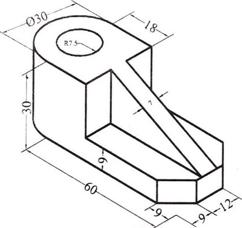

Utility Intelligence01
Utility Intelligence01
Powerline Corridor Analysis
3D corridor intelligence for structures, conductors, terrain and surrounding vegetation.
A visual portfolio of the processing, modeling and analytical workflows GeoProcess Consulting is built to deliver—from LiDAR point clouds and terrain models to GIS, utility analytics, 3D and BIM.
These examples show the kinds of geospatial outputs that can be built from processed survey, LiDAR, imagery and spatial information. The emphasis is on structure, clarity and downstream usability.
Utility Intelligence01
3D corridor intelligence for structures, conductors, terrain and surrounding vegetation.
 Infrastructure02
Infrastructure02
Spatial visualization of lines, structures, terrain and site context.
 Classification03
Classification03
Dense scenes separated into usable ground, vegetation, building and infrastructure classes.
 Spatial
Intelligence04
Spatial
Intelligence04
Map-based spatial information organized for visualization, management and analysis.
 Surface Modeling05
Surface Modeling05
Surface representation for terrain, landscape and spatial analysis.
 Bare Earth06
Bare Earth06
Bare-earth terrain representation prepared for mapping and engineering analysis.
 Analytics07
Analytics07
Measured corridor segments and vegetation-risk outputs translated into GIS.

Engineering08Structured building geometry prepared for engineering and modeling workflows.
 Photogrammetry09
Photogrammetry09
Aerial imagery connected with elevation products and orthophoto processing.
Every visual in this portfolio represents a processing path: organize the data, classify it, extract meaning, validate it and deliver it in a format the next team can use.
Share the data, scope and expected deliverable. We'll help shape the processing workflow.